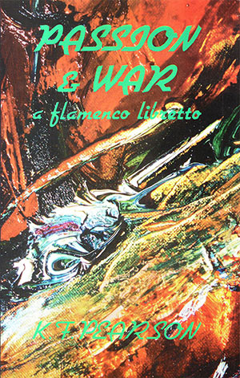

|
|


Passion & War :
K.F. Pearson
{kind=link}

{kind=link}
| A Flamenco Libretto For
Voice, Guitar and Dance Incorporating the author's Translations from
the Spanish K.F. Pearson is to be thanked for this homage to these writers. The sheer love of his work comes across formidably a not inconsiderable piece of imagination |
Passion & War; A Flamenco Libretto is a work of great simplicity, terror and hope. It dramatizes the human events and consequences of the Spanish Civil War.
K.F. Pearson knits his translations of Spanish poets of the time (Juan Ramón Jiminéz, Frederico García Lorca, Miguel Hernández and others) into a narrative of the war. Each poet is a separate character. Their ringing words reach out to us now.
Passion & War is a plea for peace, understanding and civic co-operation.
I
found myself moved by your translations and evocations of those Spanish
Civil War poets, many of them dead so young, and I was intrigued by the
way you stitched their poems together into a grand AIDS-like quilt with
the threads of your own lines - a book both original and yet within the
tradition of homenajes which
has been explored more in Spanish than in English.
John Ridland (US academic
and poet)
ISBN 1876044004
Published 1995
62 pgs
$19.95
PROLOGUE
Another time, another war a lover betrayed by a lover in Andalusia, my friends, a foreign place, or that which seems foreign to you, except for this: each person knows the blow or kiss. Poet and dancer tonight we show events both delicate and raw given in sharp words of those who lived their lives, as you live yours, innocent till one event explodes with murderous intent. PRELUDE TO WAR The year is 1934.
The place peninsular Spain. The sleep before the troubles start. AntonioMachado, teacher of French in country schools, and poet sees eternity in dusty plazas, in a mule that pulls a waterwheel
(The Waterwheel)
The day drops
sad and dusty.
The water sings
its folk copla
in the scoops of the slow water wheel.
The mule dreams
poor and old
to rhythms of shadow the water sounds.
The day drops
sad and dusty.
I do not
know what noble
divine poet
mixed with the gall of the eternal wheel
the sweet harmony
of water that sounds
and bound your eyes poor and old...
but he was a noble
divine poet
seasoned at heart with knowledge and shadow. It seems a world that will burst
apart
with excess of joy that it exists. Untouched as yet by shattered hearts, lost friends and their physical wounds, Lorca gloats no Thought explains our rippling world beneath the sun. (Questions) A plenum of cicadas sits in a field. What do you say, Marcus Aurelius, of these old philosophers of the plain? Well, your thought is poor. The river water runs gentle. Oh Socrates! What do you see in the water that goes to sharp death? Your faith is poor and sad. The rose leaves fall in the mud. Oh sweet John of God! What do you see in these glorious petals? Your heart is a tiny one! tradition children at play in an ancient quarter of a town. It is children bear us, our hope of remembrance, our shadow stretched out one early afternoon. Machado the modernist, not teaching today walks the plaza, the children at skip-rope and ball. | (The plaza and fiery...) The plaza and fiery orange trees with smiling and round fruit. Tumult of children who escape in disorder from school fills the air of the plaza with din of new voices. Infantile joy at the coigns of the dead cities!... And something new of the past we see to be wandering old streets yet!
Miguel Hernandez, young
has left the country for Madrid. He makes his name in Cafes there. Son of a goatherd he is one who studies Luis de Góngora, that elaborate 16th century poet. With Lorca he is one of those who re-invents a long tradition. He makes it sharp, he brings it close. Miguel Hernández, young before the war will change his style turns love sonnets on the bullfight. (For sadness and grief...) For sadness and grief I am born like the bull; like the bull I am stamped by the infernal branding iron in the flank and as male by the seed in the groin. Like the bull I find too small all my immeasurable heart, and in love with the face of the kiss, I fight for your love like the bull. Like the bull I groan under pain, I have bathed my tongue in my heart, and wear on my neck a loud gale. Like the bull I follow and chase, and I leave my desire on a sword, mocked like the bull, like the bull.
All Spain owes everything to him,
a delicate 20th century man founder of magazines and journals, not one poet here at all achieved a start to his career unless Juan Jiménez was there. His own work won a Nobel Prize. He gave yet more, the gift of these younger poets to Spain and us. The true greats do not fear the next. Uncontaminated, pure like conversations to one held dear he thought true language in a poem a nude or moon that walks a room. (Full Moon) The door
is ajar;
the cricket, singing.
Are you wandering naked through the field?
Like an eternal water
that enters and leaves all.
Are you wandering naked through the air?
The ant is toiling,
the basil does not sleep.
Are you wandering naked through the house?
(Whiteness)
Scent of spikenard,
a naked woman
through the dark corridors.
(I stripped you of leaves...)
I stripped you of leaves like a rose
in order to see your soul,
and I did not see it.
But all around
- horizons of earth and sea -
all, even the infinite, overflowed with character, vast and alive.
(Music)
Music!
- a naked womanmadly running through the pure night! |
Writer and Reader - By the Sea: Some Recent Australian Poetry
David McCooey
Southerly
The second ‘experimental’ collection [after Jennifer
Harrison, Graham
Henderson and K.F.
Pearson, Mosaics & Mirrors]
is also by one
of the authors of the ‘composite poems’, K. F.
Pearson. Passion
& War is described as
‘A Flamenco Libretto for voice, guitar and dance,
incorporating the
author’s translations from the Spanish’. Judgement
of the ‘libretto’
alone must be partial. However, Pearson gives few clues as to how the
piece would be performed (or even whether or not it has been performed)
which suggests that he feels the work can stand on its own. Though the
publishers claim that the work ‘knits... translations of
Spanish poets
of the time... into a narrative of the war’, the Spanish
Civil War
remains more of a ghostly outline, since the sense of narrative can
only be marginal at best when the work concentrates on the
extraordinary imagistic Spanish lyric poetry of the time. Poets
translated include Juan Ramón Jiménez, Federico
Garcíia Lorca, and
Miguel Hernández. While Pearson’s original
material which binds these
poems together is sometimes laboured, many of the poems themselves are
arresting in their simplicity. An image of the dislocation of the war
is presented by Antonio Machado: ‘You will sleep many hours /
yet on
the old shore, / and one fine morning find your / boat moored on the
other shore’ (‘The clock struck
twelve...’).
Poetry among ruins - Alan Wearne reads the pain of Spain
Alan Wearne
Herald-Sun, 4/11/1995
This is a suite of Spanish lyric verse in translation. Linked by a
quasi-narrative, and originally written to be accompanied by flamenco
guitar and dancer, the poems chart the years leading to the Spanish
Civil war, the war itself, and a few aspects of its aftermath.
The poets K.F. Pearson chooses include Jimenez, Garcia Lorca, Machardo and Hernandez. Of these, Garcia Lorca is probably the most well-known in Australia: his poetry and plays are available in most literate bookshops, his murder by the fascists is one of the century’s great symbolic crimes.
But then, once the Civil War was underway, these poets became well aware that to a monolithic ideology and regime, they and their achievements counted for very little.
Like their Russian contemporaries Akhmatova, Tsvetaeva, Mandlestam and Pasternak, they lived in the knowledge that the penalty for being who they were and what they wrote could be death.
Exile might have been an option, of course, but exile due to ideology and/or a regime is a lot different to wanting a change from the supposed provincialities of Melbourne or Sydney.
What the Spaniards and the Russians suffered puts in a wonderful relief those whingeings about the Australia Council by certain of our over-rated bardic blowhards.
Indeed, for any Australian writer bleating about their lot in life, how the lack of national appreciation puts their profile on a par with, say, lacrosse players, I’d have them read every available biography of these writers, paying close attention to the conditions under which their verse flourished.
K.F. Pearson is to be thanked for this homage to these writers. The sheer love of his work comes across formidably. If the poems seem to be colored with a consistent seriousness, it is because they are products of consistently serious years.
Perhaps Pearson’s linking verse is a little too declamatory at times, though this hardly detracts from the book’s laudable ambition.
A more major criticism might be that there didn’t seem to be a sufficient difference in tone between each of the writers under translation.
If this is true, however, one does receive a word portrait of a nation consumed by civil war; perhaps it is Spain, or at least the translator’s vision of Spain, which is speaking: a not inconsiderable piece of imagination.
The poets K.F. Pearson chooses include Jimenez, Garcia Lorca, Machardo and Hernandez. Of these, Garcia Lorca is probably the most well-known in Australia: his poetry and plays are available in most literate bookshops, his murder by the fascists is one of the century’s great symbolic crimes.
But then, once the Civil War was underway, these poets became well aware that to a monolithic ideology and regime, they and their achievements counted for very little.
Like their Russian contemporaries Akhmatova, Tsvetaeva, Mandlestam and Pasternak, they lived in the knowledge that the penalty for being who they were and what they wrote could be death.
Exile might have been an option, of course, but exile due to ideology and/or a regime is a lot different to wanting a change from the supposed provincialities of Melbourne or Sydney.
What the Spaniards and the Russians suffered puts in a wonderful relief those whingeings about the Australia Council by certain of our over-rated bardic blowhards.
Indeed, for any Australian writer bleating about their lot in life, how the lack of national appreciation puts their profile on a par with, say, lacrosse players, I’d have them read every available biography of these writers, paying close attention to the conditions under which their verse flourished.
K.F. Pearson is to be thanked for this homage to these writers. The sheer love of his work comes across formidably. If the poems seem to be colored with a consistent seriousness, it is because they are products of consistently serious years.
Perhaps Pearson’s linking verse is a little too declamatory at times, though this hardly detracts from the book’s laudable ambition.
A more major criticism might be that there didn’t seem to be a sufficient difference in tone between each of the writers under translation.
If this is true, however, one does receive a word portrait of a nation consumed by civil war; perhaps it is Spain, or at least the translator’s vision of Spain, which is speaking: a not inconsiderable piece of imagination.
Back to top
Passion and War
Alan D. Laslett
Ash Magazine
Kevin Pearson's translations and his ability to pick up the essence of feeling, evoke the mood and convey the nuances of emotion and give them meaning in a language not originally intended. His translation of the Miguel Henandez poem 'Waltz of Those in Love and United Forever' is controlled and sensitive. Juxtapozed with the sensitivity of those first lines
They haven't ever left
the orchard of their embrace
is an external threatening violence represented through 'rancorous hurricanes', 'inflexible lightning', shipwrecks, torment and oppression. Basically, I gue3ss, the simple message is that love surmounts all storms and aggtression.
Alan D. Laslett
Ash Magazine
Kevin Pearson's translations and his ability to pick up the essence of feeling, evoke the mood and convey the nuances of emotion and give them meaning in a language not originally intended. His translation of the Miguel Henandez poem 'Waltz of Those in Love and United Forever' is controlled and sensitive. Juxtapozed with the sensitivity of those first lines
They haven't ever left
the orchard of their embrace
is an external threatening violence represented through 'rancorous hurricanes', 'inflexible lightning', shipwrecks, torment and oppression. Basically, I gue3ss, the simple message is that love surmounts all storms and aggtression.